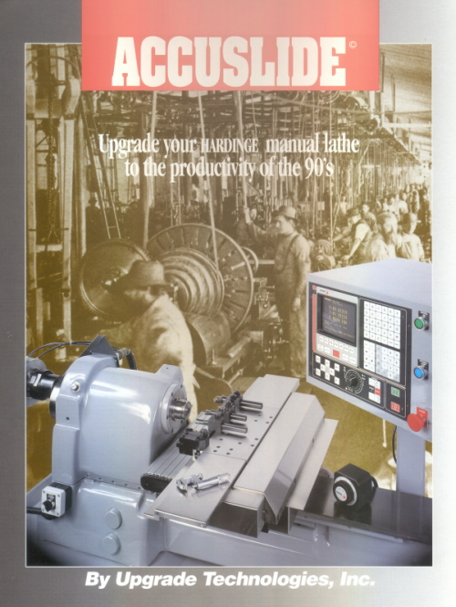
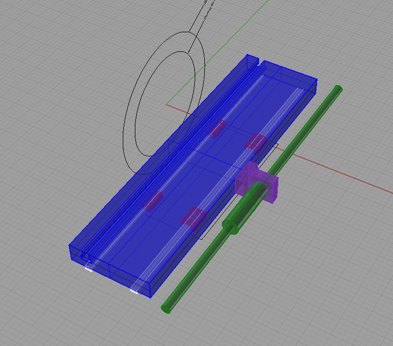
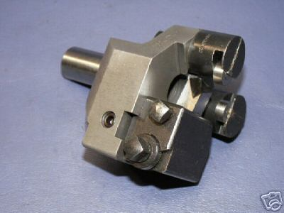
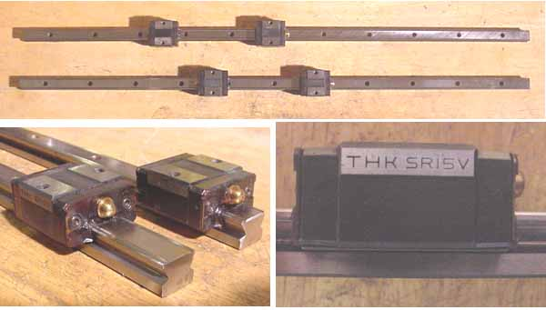
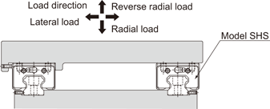
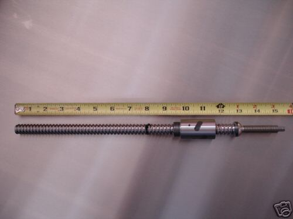
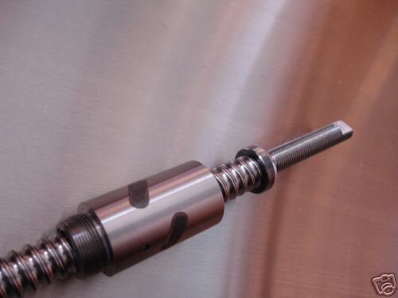

One of the best additions I ever made to my Lathemaster lathe was a quick change toolpost. I use it constantly as I am swapping various tools in and out for a job. I've gotten pretty facile with the lathe over time, and don't have to think to hard about what to do. My hands just reach for the right tool and pop them on and off.
As I use my tools, which are all manual as I write this, I often find myself thinking about what it will be like when I've finished converting them to CNC. Having to stand in front of the lathe and switch the tools manually could be a real drag, and will really slow down the operations. I have no illusions but that as the operator, I would be the weakest link. What to do? A rotary changer is everyone's first thought, but these are going to be complex to engineer. Moreover, there is not an awful lot of room on a small lathe, although it could be done.
Some time ago I came across a gadget called an Accu-slide that could be added to a Hardinge lathe to convert it over to CNC:

What you can see from the picture is that the lathe tooling is all set up in a row. This is what's called "gang tooling". The Accu-slide clamps to the Hardinge ways, and has linear slides and ballscrews for both axes, so is pretty self-contained. I always thought the Accu-slide was a cool concept, and I've read in many places that they were much loved by their owners. Somewhere on the PM boards I think there is even a video of one in operation.
The idea behind gang tooling is to let the X and Z axis movements select the tool to be used. To change tools, the slide is moved far enough to the right to clear the workpiece, the tool is indexed by an in/out motion, and then the slide moves back in to the left to bring the tool to bear. Pretty simple, eh? Note that because of the way it works, having lots of Z travel is the key to an effective gang lathe. This probably means fabricating a new slide with longer travels if you are planning to convert a lathe.
Since having seen this, I have kept my eyes peeled for information on gang tooling and spent a little time learning more about it. The beauty of it is that you get a toolchanger almost for free. Fast forward in time and eventually I came across a company called "Omniturn" that makes CNC gang lathes. Omni-turn's catalog provides a lot of great pictures and ideas around gang tooling lathes, and really crystallized the idea for me of what was needed.
While working on my Lathemaster 9x30 CNC conversion, I had been thinking about installing ballscrews. This is particularly difficult given the tight confines of the cross slide--you need a pretty small screw. But I got thinking about how the Omniturn and Accuslides are made, with the ballscrew driving from the side. This creates a lot more clearance, and its how Ron111 did a similar conversion on a 9x30. Of course this only got me to thinking about gang tooling.
While I was at it, I have always thought it would be cool to take an Asian machine and adapt it to linear slides. The accuracy and performance ought to go up hugely, as these machines are no great shakes in the precision dovetail way department. All you'd need to do is mill the male dovetail to turn it into some guide shoulders suitable for mounting a rail against.
Okay, says I, in for a penny, in for a pound. Why not do the whole thing:
Install a ballscrew driving the slide from the side.
Make a new slide that is long enough to hold a row of gang tools.
Refit the cross slide ways with linear rails.
Conceptually, this seems a straightforward project, so I dove in with Rhino and made some trial drawings of what it might look like.
Rhino Concept Drawings

Here is the basic concept...
The table is made of 1" thick aluminum, probably 6061 although 7075 (Fortal) would be better. Ideally, the aluminum should be fixture plate and already ground on top and bottom. It is 18" long, and set up for 10" travels. These are the same dimensions as the Omniturn gang lathes use.
A single T-slot runs along the front edge, and is used to mount the tool holders. I am envisioning tool holders similar to what Omniturn uses. They look easy to make. I would set their dimensions so the dovetail on the toolposts is identical to AXA's, which makes it possible to use my existing holders or buy new ones so they aren't all custom.
The rails are mounted to the underside of the tooling plate so they are fully supported. The roller trucks bolt to the top of the apron. Because of this, I think I can eliminate the need to machine the dovetail, which makes it possible to restore the lathe to manual operation and sell it if desired. I will need to work out a procedure to align the blocks so the slide moves perpendicular to the ways with sufficient accuracy.
The ballscrew shown is a 5/8" from McMaster-Carr that drives the slide from the side. An overhead sheet metal cover would be fabricated to protect the screw from swarf and coolant. I envision L-shaped brackets at the ends of the ballscrew with the slide moving unobstructed through the "elbow" of the "L", and the bearing blocks for the ballscrew integrated with the L. These brackets will be mounted to the front and rear of the apron.
Gang Lathe Tricks
Once you have a lathe set up for gang tooling, there are a lot of things you can do to take advantage of it. For example, the gang tooling assumes no tailstock, so you're probably wondering what to do about things you've always stuck in the tailstock, like a drill chuck. No problem with a CNC gang lathe, the drill chuck goes on a gang tooling block and the CNC program will properly position it along the axis of the workpiece and then run a peck drill cycle to make the hole. Same with reamers and taps, although you may want to look at a floating head for the taps. In fact, why use a drill chuck at all? Maybe keep one around, but for hole sizes you drill frequently (I am always looking for the #21 to drill a hole I plan to tap for 1/4-20) , make a dedicated toolholder for them with the bit at the correct height.
Omni-turn's catalog provides a lot of great pictures and ideas around gang tooling lathes. Here are just a few gang lathe tricks I learned reading it:
You can drill angled holes. Yes, you need a spindle that's indexable like a servo, but the slide does the appropriate coordinated X and Y motions to allow angled holes to be drilled in the workpiece. If you've got a servo'd spindle, you could drill bolt circles, for example on a flange.
You can extend the tooling table to move the gang tools further apart. They just bolt the toolposts onto these extension bars.
The toolposts look like simplified QCTP's. They use a dovetail and wedge, and are bolted to a T-Slot on the tool plate. They have a lip so they're aligned with the front of the tool plate, though some are available without a lip if need be.
You can get gang tool holders that are all in a big block. This makes it fast and easy to put all the tools needed for a particular job together on one, and then swap the whole thing as a unit when a new job is called for.
All these goodies seem to be proprietary and expensive! They even have their own collet system.
They have live tooling built on Foredom, Rotofera, Minifix, NSK, and Suhner flex shaft tools. These have a variety of speeds and as much as 1.5HP. They seem ideal for high speed aluminum and brass applications.
Toolholders are available in the conventional square shank, but also in a round shank that is parallel to the turning axis. The round shanks conserve gang tool capacity by taking less slide travel.
They offer other interesting space saving options. One of the slickest is a dual turning and threading tool that fits in one position.
Box Tools
When I bring up the idea of gang tooling on the various boards, there is usually a strong reaction against the loss of tailstock functionality. I recently came across a thread where the Widgitmaster suggests a Box Tool provides a good alternative to the tailstock:

Box Tool with Support Rollers...
A box tool is much like a follower rest and toolholder integrated into one assembly. Seems like it would be worth thinking about. The workpiece end would need to be small enough to allow the rollers to engage before cutting begins. I'm not real sure how the rollers are tensioned onto the workpiece either, but its worth some research.
THK Linear Slides
After looking at costs for new slides, I put in a bid on a pair of used THK SR15V linear slides for this project and won! For the record, the new slides I looked at were from McMaster-Carr ($751.52 for an unknown brand), Technico ($394, THK SRS series), and Automation4Less ($189.49, HiWin). Hopefully they show up in good condition. They're a little beefier than some of the new slides I looked at (which means they're bulkier too!), but I got the 2 rails and 4 trucks for $127.50.

THK SR15V Linear Slides...
Here are some specs from THK, and I was also able to download some DXF CAD files so I can be dimensionally accurate in my design.
Here is THK's recommended installation configuration for maximum rigidity:

Schneeberger Precision Ground Ballscrew
Another eBay find contributed to this project:


This is a nice compact precision ballscrew with a travel of approximately 10", which is spot on with what I'm looking for. The unit arrived looking brand new. It was lubricated with a thin coat of oil and moved very smoothly. It's going to take a little bit of thought to see how to mount it, but my current thinking is that I will produce a sleeve with an ID thread to fit the end and loctite it on. A nut on the remaining threaded portion will lock my bearings in place.
Cast Iron
In late March 2007, I ordered a block of cast iron 1 1/4" thick x 5 1/4" x 18" from Speedy Metals. Don't try to do this via email--my first time they told me they couldn't help! Instead, call Speedy's 800 number (1-888-744-4140), and ask for Marty or Anson. I got that advice from Widgitmaster and it worked great.
I'll have to decide whether to go ahead with linear slides, or turn that piece of cast iron into a dovetail slide the way this gentleman did:
Next Steps
This is as far as I've gotten. I need to get the lathe up and running on its ACME leadscrews before I attempt to go too far with this. A lot more design work is called for. But I did purchase a pair of THK slides and some cast iron so far. I'll make progress slowly but surely! I need to procur the ballscrew that will be used and spend a lot of time tuning this design to their measurements as well as the exact measurements of the lathe before any chips fly. I am going to tackle this one as soon as I get the basic CNC lathe up and running as I'll want ballscrews ASAP and I consider this project part of adding them.
Do you want to be a better CNC'er?
Get Better Tool Life, Surface Finish, and Material Removal Rates.